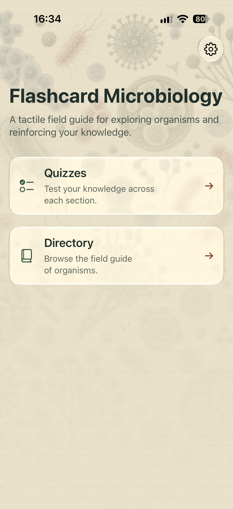
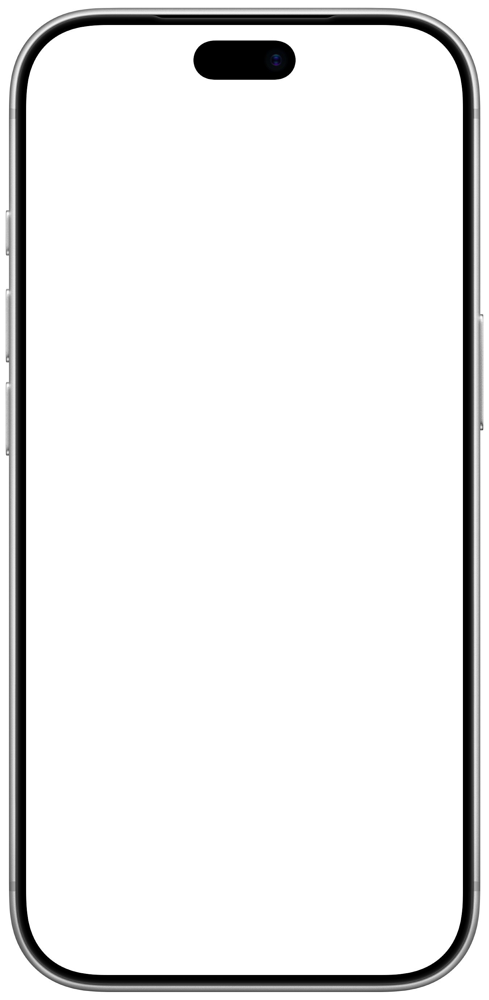
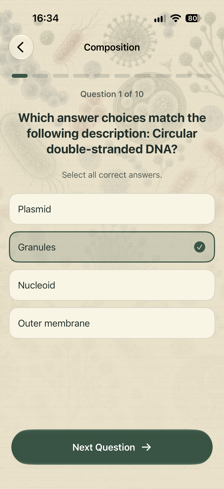
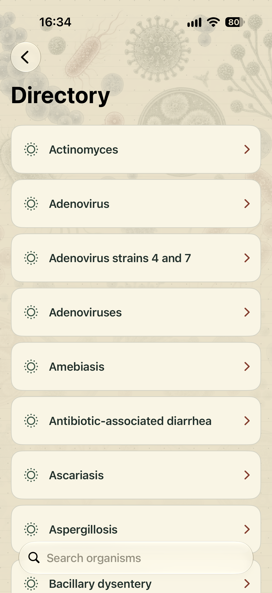
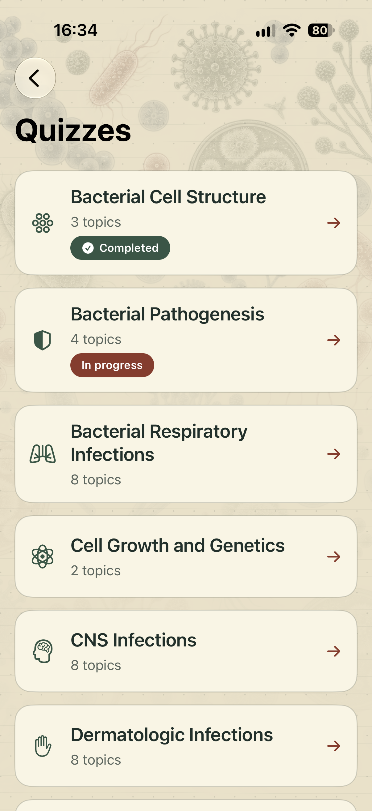
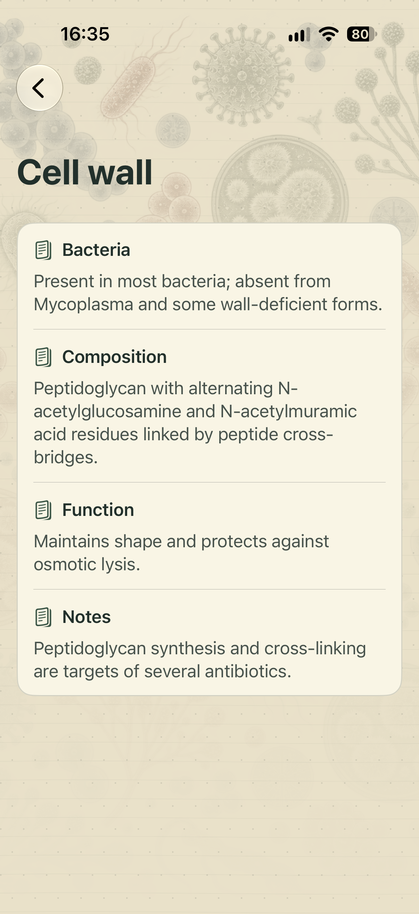

ACTIVE RECALL
Less rereading.
More remembering.
Put your knowledge to work with topic-based quizzes and questions that ask you to select every correct answer.
YOUR POCKET FIELD GUIDE
Explore microbiology.
Build knowledge, one quiz at a time.
iOS · iPadOS · macOS



A LITTLE PRACTICE. A BIGGER PICTURE.
From bacterial cell structure to infectious diseases, bring your microbiology revision into focus. Explore a topic. Test what you know. Keep building.
ACTIVE RECALL
Put your knowledge to work with topic-based quizzes and questions that ask you to select every correct answer.
YOUR FIELD GUIDE
Search the directory and explore the details behind organisms, from their properties to associated diseases and treatments.



ONE TOPIC AT A TIME
Pick up a new topic or return to familiar ground. Completion indicators help you see where you've been and what to study next.
Organized for revision.
Move between topic quizzes and reference material.
The details, together.
Review structure, composition, function, and notes.
BUILT AROUND YOUR STUDY TIME
No ads. No account. Your study data stays on your device, so you can focus on learning.
FLASHCARD MICROBIOLOGY
For medical, physician assistant, pharmacy, and nursing students.
Download on the App Store ↗iOS · iPadOS · macOS
Free features. Optional in-app purchase to unlock the full version.